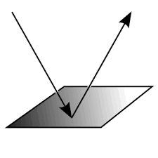

The goal of this site is to help you choose a path through our posts. This page explains features of the posts themselves; the other pages provide an overview of how the site works, and suggest ways to choose which post to start with and which ones to read after that.
The posts appear here substantially as they did on the original blog.
- Legend. At the top of each post is a legend that summarizes the categories used to place the post in the graphs. The legend contains (up to) six icons:
- The icon that represents the post in the graphs.
- An icon indicating the post type:
 | "Reading Post"--a discussion of a particular reading from the author's home discipline; includes citation information for (and links to) the reading. |
|  | "Reflection Post"--a statement of the author's own views on our topic, in response to other posts. |
- The icon for the approach associated with the author's home discipline (see explanations available from the Content tab in the menu above).
- The icon for the additional approach (if any) found in the post.
- The icon for a theme addressed in the post, and the outlook taken on it (see explanations available from the Content tab in the menu above).
- The icon for a second theme addressed in the post (if present), and the outlook taken on it.
- Comments. We reproduced any comments a post received on the blog at the end of post as it appears here. We do not treat comments as separate posts, with their own nodes.
- Links.
- Links to external websites bring up a new browser window.
- Links to posts in the blog that were not part of the series of posts for this project bring up a new browser window.
- Links to posts in this series show the post in this window.